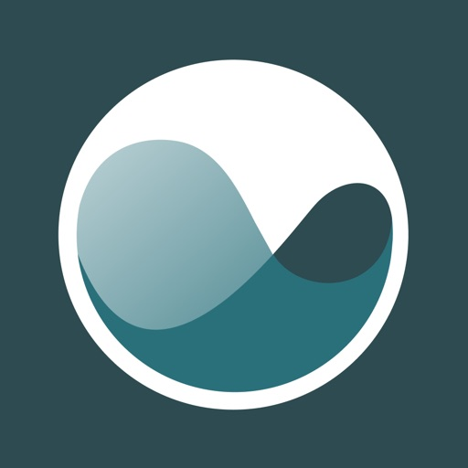
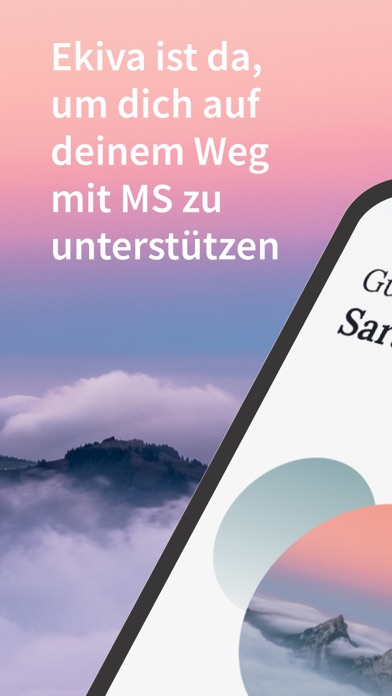

German App Store rating for Ekiva MS as retrieved on 2026-03-13. Small sample, but public trust is fragile.

A concept built around the public feedback on Ekiva MS: make symptom entry lighter, safer, and visibly useful in under a minute.
Built for Kristiyan Dobrev, Tech Lead at Dawn Health, whose remit sits directly inside Apple-first, medical-grade mobile product delivery.
German App Store rating for Ekiva MS as retrieved on 2026-03-13. Small sample, but public trust is fragile.
Google Play still shows 100,000+ installs, so even small flow friction compounds quickly across a real user base.
The sharpest public complaints point to brittle data entry and a weak value loop after logging.
Replace heavy logging with a short adaptive flow that returns a visit-ready summary without straying into unsafe advice.
Dawn's own Ekiva case page says the app should fit into daily life without friction and support better HCP conversations. The public review signal suggests that promise is not landing reliably enough in the moment of data entry.
Literal translation: "Doesn't work."
A translated 1-star review complains the app asks for effort without delivering enough patient value back.
The wording is rough, but the signal is clear: input friction is still visible in the public record.
Dawn's case page says the product was designed to fit daily life and help patients feel empowered before consultations.
Brisa sits at 3.97 on iOS Germany with 106 ratings and leans harder into appointment planning and visible value.
Shorter logging, saved progress, instant trend framing, and one-tap export can improve trust without bloating scope.
Public web performance is 50 / 100 on mobile. Not catastrophic, but still heavy for a trust-first health brand.
Brisa's public web surface scores 63 / 100 on mobile and its store ratings suggest stronger perceived utility.
Do not add more tasks. Compress the logging flow until it feels closer to sending yourself a timestamped note, then convert the captured data into something patients and clinicians can use immediately.
Those are already aligned with the product thesis.
That is the narrowest place to win back trust and improve retention.
The concept below keeps Ekiva's core job to be done intact, but tightens the moment that determines whether patients come back tomorrow.

The existing product promise is solid, but public feedback suggests the logging experience still feels too brittle and too one-sided.
Your last three higher-fatigue days were also the days with poorer walking confidence. We will add this to your next visit brief automatically.
Instead of a dense form, the app narrows the decision load and returns visible value immediately after input.
The payoff is not "more AI." It is a clearer, safer bridge from raw patient input to a better consultation.
Kristiyan's own background points to pragmatic system design inside regulated mobile. The strongest conversation opener is a concrete concept for reducing friction without bloating scope or pretending to replace clinical judgment.
Public inputs used here: Dawn Health product pages, App Store / Google Play metadata, public review text, and benchmark web performance signals gathered on 2026-03-13.